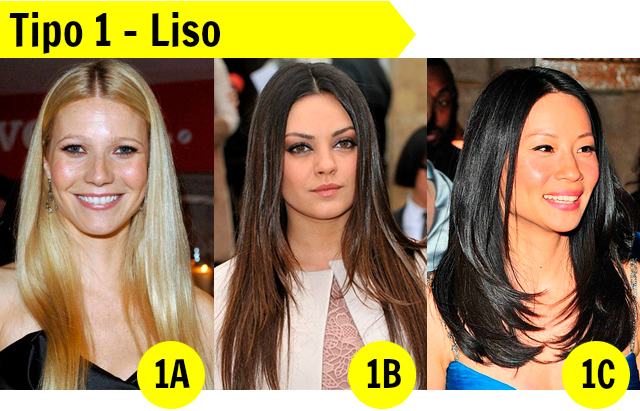
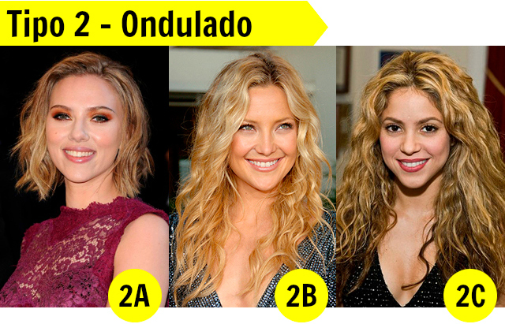
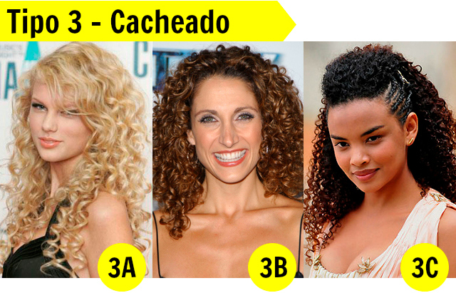
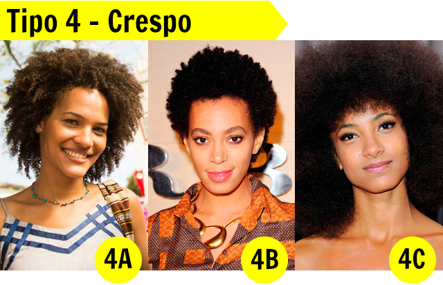

Os cabelos humanos apresentam uma ampla variedade de tipos e texturas, cada um com suas características únicas de estrutura e necessidades específicas de cuidado. Essa diversidade capilar é influenciada por fatores genéticos, étnicos e ambientais. É importante entender as particularidades de cada tipo de cabelo para proporcionar os cuidados adequados e manter a saúde e a beleza dos fios.
Estrutura Capilar:
A estrutura capilar é composta por várias camadas, mas as mais importantes para compreender a textura do cabelo são a cutícula, o córtex e a medula. A cutícula é a camada externa do cabelo, composta por escamas sobrepostas que podem ficar mais abertas ou mais fechadas, determinando a textura e a porosidade dos fios. O córtex é a camada intermediária, que contém a queratina e é responsável pela força e elasticidade dos cabelos. A medula é a camada mais interna, mas não está presente em todos os cabelos.

Tipos de texturas:
Cabelos Lisos (1a, 1b, 1c):
Os cabelos lisos são caracterizados por terem cutículas bem fechadas, o que os torna geralmente mais brilhantes. No entanto, cabelos lisos também têm a tendência de ficar oleosos mais rapidamente, devido à facilidade com que a oleosidade natural do couro cabeludo desliza pelos fios. Os cabelos lisos precisam de produtos de limpeza suaves para evitar o ressecamento e de protetores térmicos quando se utiliza calor. Além disso, a manutenção da saúde do couro cabeludo é fundamental para evitar problemas como oleosidade em excesso ou caspa.

Cabelos Ondulados (2a, 2b, 2c):
Os cabelos ondulados têm uma textura intermediária, com cutículas mais abertas do que os cabelos lisos. Eles podem variar desde ondas sutis até ondas mais definidas. O cuidado ideal envolve produtos que definam e mantenham a forma das ondas, bem como produtos que ofereçam hidratação, uma vez que os cabelos ondulados também têm tendência a ressecar.

Cabelos Cacheados (3a, 3b, 3c):
Os cabelos cacheados são caracterizados por cutículas mais abertas e curvaturas pronunciadas, formando cachos. Eles tendem a ser mais ressecados, pois a oleosidade natural do couro cabeludo tem dificuldade em percorrer o comprimento dos fios. Portanto, a hidratação é essencial para manter a saúde e a definição dos cachos. Produtos sem sulfato, ricos em ingredientes hidratantes e leave-ins são ótimas opções para cabelos cacheados.

Cabelos Crespos (4a, 4b, 4c):
Os cabelos crespos são os mais encaracolados, com cutículas muito abertas e múltiplas curvaturas. Eles também são naturalmente mais secos, devido à dificuldade da oleosidade natural em percorrer os fios. Hidratação profunda é fundamental, bem como produtos ricos em óleos naturais e manteigas para selar a umidade. O método de "co-wash" (lavagem apenas com condicionador) é frequentemente usado para preservar a hidratação.

Em resumo, a textura e o tipo de cabelo são determinados pela estrutura da cutícula, que influencia a porosidade, o brilho e a retenção de umidade dos fios. Cada tipo de cabelo requer cuidados específicos para manter a saúde e a beleza, e a escolha dos produtos e rotina de cuidados deve ser adaptada de acordo com as características individuais de cada tipo de cabelo. A compreensão dessas diferenças ajuda a garantir que os fios permaneçam saudáveis e com uma aparência deslumbrante.
Os cabelos podem apresentar uma ampla gama de características, incluindo diferentes níveis de oleosidade e hidratação. Compreender as especificidades dos cabelos secos, super secos, oleosos e super oleosos é fundamental para escolher os produtos e rotinas de cuidados adequados.
Cabelos Secos:
Cabelos secos são caracterizados por uma falta de umidade natural, resultando em fios ásperos, quebradiços e opacos. As principais características incluem:
- Sensação de aspereza e falta de suavidade.
- Tendência a pontas duplas e quebra.
- Aparência opaca e sem brilho.
- Dificuldade em manter penteados.
Para cuidar de cabelos secos, são recomendados produtos hidratantes e nutritivos, como máscaras de tratamento, condicionadores intensivos e óleos capilares. A hidratação regular é essencial para repor a umidade e manter os fios saudáveis.
Cabelos Super Secos:
Cabelos super secos apresentam características mais acentuadas de ressecamento. As principais características adicionais incluem:
- Extrema aspereza e rigidez.
- Frizz acentuado.
- Maior propensão a danos, como quebra.
Os cabelos super secos requerem cuidados mais intensivos, incluindo máscaras de tratamento profundas, óleos reparadores e um cronograma capilar consistente para restaurar a umidade e a elasticidade.
Cabelos Oleosos:
Cabelos oleosos são caracterizados por uma produção excessiva de óleo pelas glândulas sebáceas do couro cabeludo. As principais características incluem:
- Aparência oleosa e pesada.
- Necessidade de lavagens frequentes para controlar a oleosidade.
- Tendência a desenvolver caspa oleosa.
Para cuidar de cabelos oleosos, é recomendado o uso de shampoos de limpeza profunda e produtos leves, bem como evitar o uso excessivo de condicionadores na raiz.
Cabelos Super Oleosos:
Cabelos super oleosos têm uma produção de óleo ainda mais intensa e podem se tornar oleosos logo após a lavagem. As principais características adicionais incluem:
- Raiz excessivamente oleosa, mesmo após a lavagem.
- Sensação pegajosa e desconfortável no couro cabeludo.
- Necessidade de lavagens muito frequentes.
O cuidado adequado para cabelos super oleosos envolve o uso de shampoos adstringentes e leves, lavagens mais frequentes e a evitação de produtos capilares pesados. A compreensão das características dos cabelos secos, super secos, oleosos e super oleosos é fundamental para estabelecer uma rotina de cuidados capilares eficaz. A escolha dos produtos, a frequência das lavagens e a atenção às necessidades específicas de cada tipo de cabelo são essenciais para manter a saúde, o brilho e a aparência desejada dos fios.